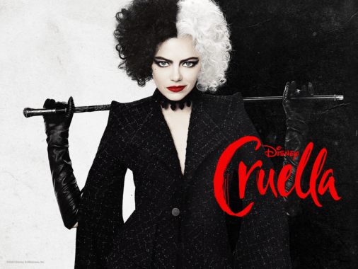

Emma Stone is Disney's Cruella
Based on the book The Hundred and One Dalmations
 Only on Disney+Directed by:
Craig Gillespie
Writing Credits:
Dana Fox and Tony McNamara (Screenplay)
Aline Brosh McKenna, Kelly Marcel, and Steve Zissis (Story by)
Cast:
Emma Stone - Cruella
Emma Thompson - The Baroness
Joel Fry - Jasper
Paul Walter Hauser - Horace
John McCrea - Artie